Fishers Exact Test
Why would you use it?
Fisher’s Exact test is useful when you want to know if there is a relationship between 2 categorical variables.
Couldn’t I just use the Chi-square test?
Yes, you could, but the Chi-square test may be unreliable if your sample is small. Fisher’s Exact test always gives the true probability of a particular configuration of contingency table values and is always accurate. The Chi-square test is an approximation which can be problematic with small samples.
How small is small?
A commonly used guide is if one or more cells in your contingency table contains an expected count of less than 5.
What is meant by ‘expected count’?
Scroll to the bottom of the page.
Give me an example of the type of data and question that it’s suitable for
I have 2 binary variables – whether someone has ever been excluded from school and whether they have been a victim of violence.
I want to know if there is a relationship between exclusion and being victimised or whether there is no relationship (i.e., the variables are independent – one does not seem to be related to the other)
I’ve created a contingency table…
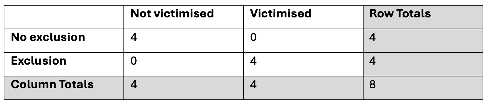
…which shows that a greater percentage of people with an exclusion are victimised than people with no exclusions (in fact, all of the people with an exclusion have been victimised but none of the people without an exclusion have been victimised), but I know that it’s possible that this could just be specific to this particular sample and really there is no relationship.
I’d like to run a statistical test to find out the probability that there is no relationship. If that probability is extremely low – below 0.05% - then I will have some confidence that there really is a relationship between exclusion and victimisation (rather than the difference in proportions being only relevant to this particular sample).
How can this be done in R or Python?
To do this in R, we first need a contingency table. Let’s re-create our data in a contingency table called ‘ct’:
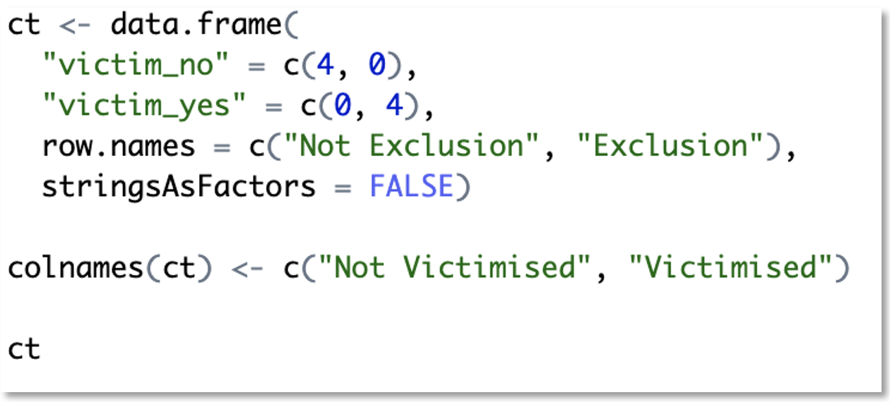
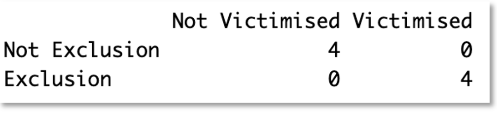
Then run the test:
This gives us the following results:
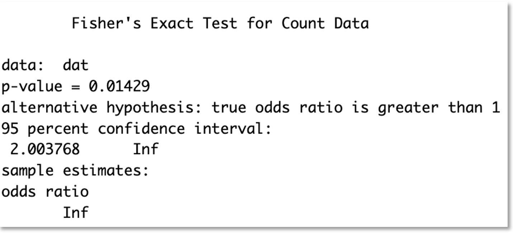
Note that alternative = “greater” means we’re running a one-sided test and expecting the difference in proportions is greater than expected if there were no relationship. This can be changed to “less”, or if you want a two-sided test you can change it to “two.sided”
To do this in Python, we follow the same steps using the following code:
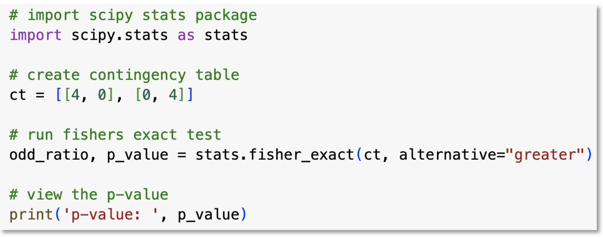
This gives us the following results:
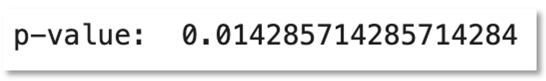
How should the results be interpreted?
Since the p-value is less than 0.05 we can say that this is a statistically significant result. We would conclude that there is evidence of a relationship between exclusion and victimisation.
How is the result calculated? Show me with an example.
First, we need to calculate how many ways the table could be configured with a sample of 8 where the row totals are both 4 and the column totals are both 4.
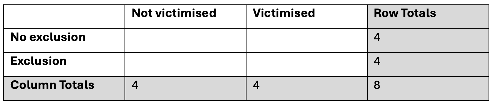
There are 5 possible values for the top-left cell - the number of people who had no exclusions AND not been victimised. The number could be 0, 1, 2, 3 or 4. It can’t be more than 4 because the row total is 4.
If this cell contains 0, then the top-right cell (no exclusion AND victimised) must contain 4, because the ‘No exclusion’ row total is 4.
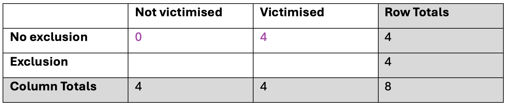
The bottom-left cell must be 4 because the ‘Not victimised’ column total is 4, and the bottom-right cell must be 0 because the Exclusion row total is 4, and the Victimised column total must be 4.
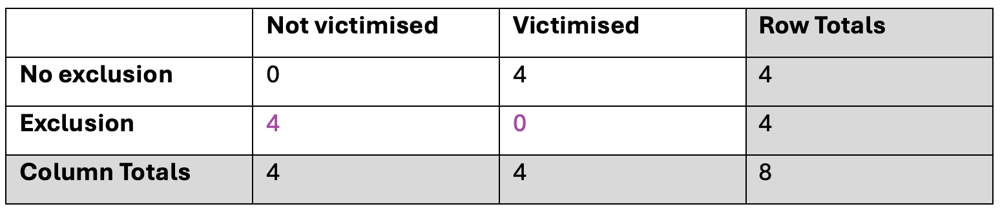
If we repeated this process for all the possible remaining values for the first cell (1,2,3,4) it would give us the following 4 tables:
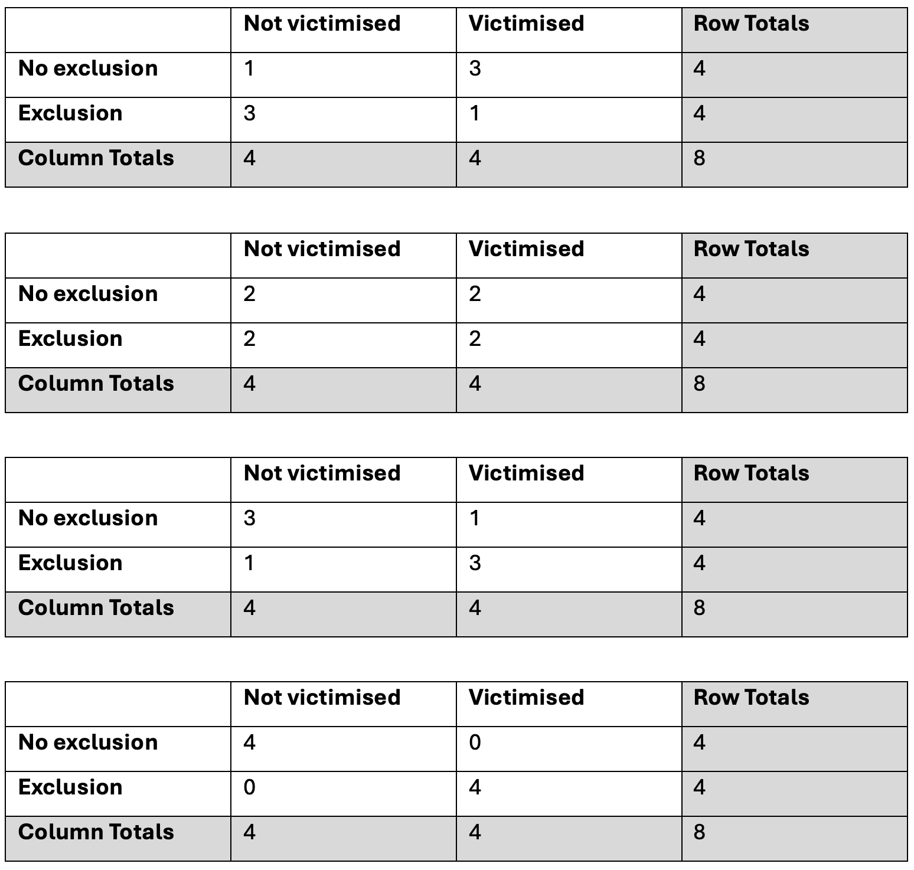
It’s not necessary to create all possible configurations of the table but now you can see that we have 5 possible ways that the contingency table could be configured when the row totals and column totals (sometimes called the marginal totals) are fixed (always the same).
Next, for the configuration of the contingency table that we see in our data, we need to calculate the probability of that table. If the probability is low enough then we can conclude that there is evidence that there is a relationship between exclusion and victimisation.
To calculate the probability, we first need to create a new contingency table where each value is the factorial of the original contingency table values.
The factorial of a number is the number multiplied by all the whole numbers between the number and 1. For example:
- 4 factorial (or you could say “the factorial of 4”) is 4 * 3 * 2 * 1 = 24.
- 3 factorial is 3 * 2 * 1 = 6.
- 2 factorial is 2 * 1 = 2.
- 1 factorial is 1.
- 0 factorial is also 1.
Factorial is written as an exclamation mark like this:
4!
…read as “four factorial” or “the factorial of four”.
For the configuration of the table that matches our dataset:
…this would create the following:
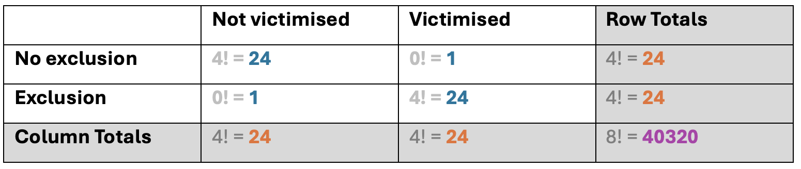
Now, using the results from the factorial calculations, we can calculate the probability. To do this, we:
- multiply the row and column totals together (let’s call the result A)
- multiply the four cell values together (let’s call the result B)
- multiply B by the sample total (let’s call the result C)
- calculate A divided by C
So, for the first possible table configuration (see below), the probability is:
( 24 * 24 * 24 * 24 ) / [ ( 24 * 1 * 1 * 24) * 40320 ]
= 331776 / [ 576 * 40320 ]
= 331776 / 23224320
= 0.01429
This is the same as we got when we ran the test in R and Python, and (as expected) is less than 0.05 so this is a statistically significant result. We would conclude that there is evidence of a relationship between exclusion and victimisation.
It can get a bit fiddly to do these calculations so thank goodness we can do it more easily in R or Python!
Note: We don’t need to but if we wanted to check we were calculating all this correctly, we could either do this in R/Python (which would be the easiest way), or we could repeat these calculations for all the other possible configurations of the table so that we have a probability for each of the 5 possible configurations of the table. In this example, the probabilities would be:
- 0.014
- 0.229
- 0.514
- 0.229
- 0.014
Notice that these add up to 1. This is because these are the possible options so if your probabilities don’t add up to 1 then something has gone wrong.
Earlier you mentioned ‘expected count’. What are expected counts?
The expected counts are the values we would expect to see in the contingency table if there is no relationship between the 2 variables.
In our example, where we have a sample of 4, we would expect to see:
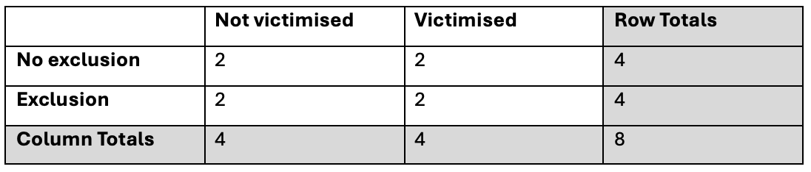
How can I calculate what the expected counts are?
In R:
This gives us the following results:
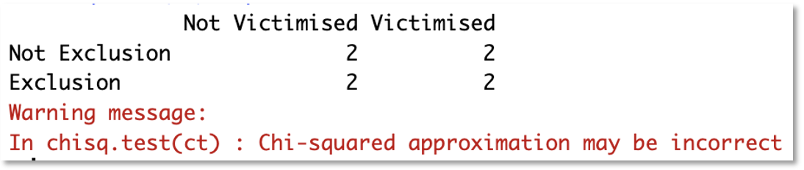
In Python:
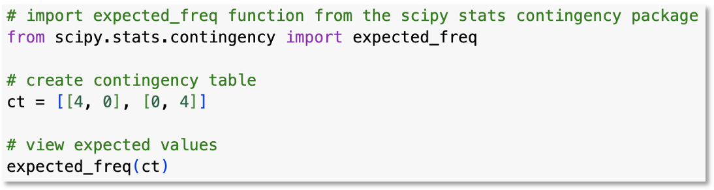
This gives us the following results:
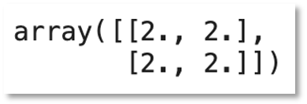
To calculate them manually:
For each cell, multiply the row total with the column total and then divide by the sample size (grand total).
In our example:
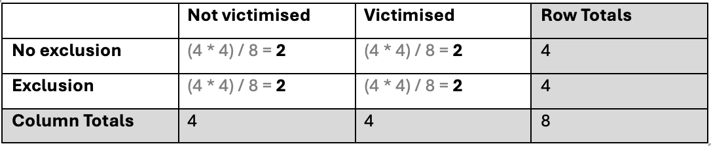
Why is it called Fisher's Exact Test?
“Fisher’s” because Ronald Fisher invented it.
“Exact” because it calculates the exact probability of a particular configuration of contingency table values.
Tell me a fun fact about Fisher’s Exact test
The test was reportedly invented in response to a lady (Muriel Bristol) who said she could tell whether a cup of tea was made by pouring the milk first or the tea first. Ronald Fisher described this experiment in a chapter called “The Principles of Experimentation, Illustrated by a Psycho-Physical Experiment” in his book called “The Design of Experiments”, published in 1960. The experiment used a sample of 8 cups of tea. Four cups were made by pouring the milk first, and four were made by pouring the tea first. The cups of tea were given to the lady at random, for her to taste each cup and give her prediction of how the tea was made.